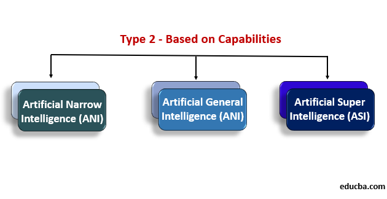

There are 3 types of AI.
- Narrow AI (Weak AI):
- This type of AI is designed and trained for a specific task or a narrow range of tasks.
- Examples include speech recognition, image classification, and recommendation systems.
- Narrow AI operates within a limited context and cannot perform tasks outside its programmed scope.
- General AI (Strong AI):
- General AI refers to a machine with the ability to perform any intellectual task that a human can do.
- This type of AI would have human-like cognitive abilities, such as reasoning, problem-solving, and understanding diverse
domains.
- General AI remains theoretical and has not been achieved yet. It would require surpassing human-level intelligence across
a wide range of tasks.
- Artificial Superintelligence (ASI):
- ASI is an even more advanced form of AI that exceeds human intelligence in every possible way.
- It could potentially outperform humans in creativity, social skills, and other areas where humans excel.
- ASI is currently hypothetical and is the subject of much debate and speculation in the field of AI ethics and philosophy.
